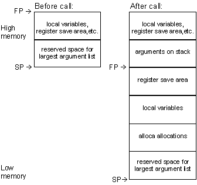
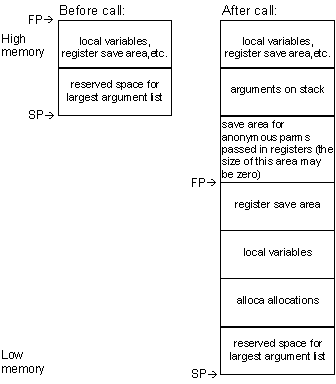

Copyright Ó 1999 CYGNUS
SOLUTIONS, Inc. All rights reserved.
No part of this document may be reproduced in any form
or by any means without the prior express written consent of CYGNUS
SOLUTIONS, Inc.
No part of this document may be changed and/or modified
without the prior express written consent of CYGNUS
SOLUTIONS, Inc.
GNUPro®, the GNUPro® logo,
and the Cygnus Solutions logo are registered trademarks of
CYGNUS SOLUTIONS, Inc.
All other brand and product names are trademarks of their respective owners.
Corporate Headquarters
CYGNUS SOLUTIONS
1325 Chesapeake Terrace
Sunnyvale, CA 94089 USA
TEL: +1 408 542 9600
Cygnus Japan
NIHON CYGNUS SOLUTIONS
Madre Matsuda Building
4-13 Kioi-cho Chiyoda-ku
Tokyo 102-0094 JAPAN
TEL: +81-3-3234-3896
FAX: +81-3-3239-3300
EMAIL: info@cygnus.co.jp
WEBSITE: http://www.cygnus.co.jp/
Cygnus Europe
CYGNUS SOLUTIONS
35-36 Cambridge Place
Cambridge CB2 1NS
United Kingdom
TEL: +44 1223 728728
FAX: +44 1223 728777
The complete tool name is a three-part hyphenated string. The first part indicates the processor family (‘arm’). The second part indicates the file format output by the tool (‘elf’). The third part is the generic tool name (‘gcc’). For example, the GCC compiler for the ARM7 is ‘arm-elf-gcc’.
The ARM7 package includes the following supported tools:
| Tool Description | Tool Name |
| GCC compiler | arm-elf-gcc |
| C++ compiler | arm-elf-c++ |
| GAS assembler | arm-elf-as |
| GLD linker | arm-elf-ld |
| Binary Utilities | arm-elf-ar
arm-elf-nm arm-elf-objcopy arm-elf-objdump arm-elf-ranlib arm-elf-size arm-elf-strings arm-elf-strip |
| GDB debugger | arm-elf-gdb |
Both big-endian and little-endian mode may be selected.
The default is
little endian.
| CPU | Operating System | Vendor |
| x86 | Windows NT 4.0 | Microsoft |
| x86 | Redhat Linux 5.x | Redhat |
C:\cygnus\gnupro\i386-cygwin32\arm-elf\ecos-99r1
For Bourne shell compatible shells:
if ( "$?MANPATH" == "0" ) then
setenv MANPATH "/usr/local/man:/usr/man"
endif
if ( "$?INFOPATH" == "0" ) then
setenv INFOPATH "/usr/local/info:/usr/info"
endif
setenv MANPATH $PROOT/man:$MANPATH
setenv INFOPATH $PROOT/info:$INFOPATH
set path = ( $PROOT/H-i386-pc-linux-gnu/bin
$path )
This option is not supported for use with eCos.
This option is not supported for use with eCos.
Note: In regard to the two previous options, ARM/Thumb inter-working is not supported by eCos at this time.
arm2
arm250
arm3
arm6
arm600
arm610
arm620
arm7
arm7m ‘arm7m’
is the default setting
arm7d
arm7dm
arm7di
arm7dmi
arm70
arm700
arm700i
arm710
arm710c
arm7100
arm7500
arm7500fe
arm7tdmi
arm8
armv2
armv2a
armv3
armv3m
armv4 ‘armv4’
is the default setting
armv4t
| Symbol | Condition |
| arm | Is always defined. |
| __semi__ | Is always defined. |
| __APCS_32__ | If ‘-mapcs-26’ has NOT been specified. |
| __APCS_26__ | If ‘-mapcs-26’ has been specified. |
| __SOFTFP__ | If ‘-mhard-float’ has NOT been specified. |
| __ARMWEL__ | If ‘-mwords-little-endian’ has been specified. |
| __ARMEB__ | If ‘-mbig-endian’ has been specified. |
| __ARMEL__ | If ‘-mbig-endian’ has NOT been specified. |
| __arm2 | If ‘-mcpu=arm2’ has been specified. |
| __arm250 | If ‘-mcpu=arm250’ has been specified. |
| __arm3 | If ‘-mcpu=arm3’ has been specified. |
| __arm6 | If ‘-mcpu=arm6’ has been specified. |
| __arm60 | If ‘-mcpu=arm60’ has been specified. |
| __arm600 | If ‘-mcpu=arm600’ has been specified. |
| __arm610 | If ‘-mcpu=arm610’ has been specified. |
| __arm620 | If ‘-mcpu=arm620’ has been specified. |
| __arm7 | If ‘-mcpu=arm7’ has been specified. |
| __arm7m | If ‘-mcpu=arm7m’ has been specified. |
| __arm7d | If ‘-mcpu=arm7d’ has been specified. |
| __arm7dm | If ‘-mcpu=arm7dm’ has been specified. |
| __arm7di | If ‘-mcpu=arm7di’ has been specified. |
| __arm7dmi | If ‘-mcpu=arm7dmi’ has been specified. |
| __arm70 | If ‘-mcpu=arm70’ has been specified. |
| __arm700 | If ‘-mcpu=arm700’ has been specified. |
| __arm700i | If ‘-mcpu=arm700i’ has been specified. |
| __arm710 | If ‘-mcpu=arm710’ has been specified. |
| __arm710c | If ‘-mcpu=arm710c’ has been specified. |
| __arm7100 | If ‘-mcpu=arm7100’ has been specified. |
| __arm7500 | If ‘-mcpu=arm7500’ has been specified. |
| __arm7500fe | If ‘-mcpu=arm7500fe’ has been specified. |
| __arm7tdmi | If ‘-mcpu=arm7tdmi’ has been specified. |
| __arm8 | If ‘-mcpu=arm8’ has been specified. |
static object_t myobj __attribute__((init_priority (30000) ));
The syntax is slightly different if the object takes any arguments to its constructor:
static object_t myobj __attribute__((init_priority (30000) )) = \ object_t(arg1, arg2);
The numeric priority can be from 1 to 65535, with 1 being the highest priority, and 65535 being the lowest. The default priority for objects without this attribute is 65535. Constructors with a higher priority are guaranteed execution before constructors with lower priority.
In all cases, you must provide the argument ‘-finit-priority’ to the compiler on its command-line for it to recognize this attribute when you are compiling your C++ source files.
If you are using eCos, be warned that eCos uses initialization priorities internally. Ensure you choose an appropriate priority level so that other eCos subsystems will have initialized before you refer to them in your own constructor.
The GNUPro C and C++ compilers can now optionally remove these unnecessary functions from the final image. They also ensure that any shared global data is removed that is only referenced by functions that are removed. This can be done by including the options ‘-ffunction-sections’ and ‘-fdata-sections’ on the command-line, when you invoke the C or C++ compiler. The ‘-ffunction-sections’ option removes unnecessary functions, and the ‘-fdata-sections’ option removes unnecessary data.
In addition, when classes define virtual methods in C++,
it is possible to remove any unused methods from the final image by passing
the option
‘-fvtable-gc’
to the C++ compiler on its command-line.
In all cases, you must also supply a command-line option
when linking. If invoking the linker ld directly, use ‘--gc-sections’
on its command-line; alternatively, if you are using the preferred method
of linking your executable, using the form ‘gcc
-o <program
name> <file1>.o
<file2>.o’, then also pass the option
‘-Wl,--gc-sections’
on the compiler command-line, for example:
| Type | Size (bytes) | Alignment (bytes) |
| char | 1 byte | 1 byte |
| short | 2 bytes | 2 bytes |
| int | 4 bytes | 4 bytes |
| unsigned | 4 bytes | 4 bytes |
| long | 4 bytes | 4 bytes |
| long long | 8 bytes | 8 bytes |
| float | 4 bytes | 4 bytes |
| double | 8 bytes | 8 bytes |
| pointer | 4 bytes | 4 bytes |
| Parameter registers: | |
| general-purpose | r0-r3 |
| Register usage: | |
| volatile | r0-r3, r12 |
| non-volatile | r4-r10 |
| frame pointer | r11 |
| stack pointer | r13 |
| return address | r14 |
| program counter | r15 |


Argument Representation
Note:
Char, short, pointer and other integral values occupy one word in an argument list. Character and short values are widened by the C compiler during argument marshalling.
A structure always occupies an integral number of words (unless this is overridden by the ‘-mstructure-size-boundry’ command line option).
The first four words of the argument values are loaded into ‘r0’ through ‘r3’, and the remainder are pushed on to the stack in reverse order (so that arguments later in the argument list have higher addresses than those earlier in the argument list). As a consequence, a FP value can be passed in integer registers, or even split between an integer register and the stack.
A type is integer-like if its size is less than or equal to one word and if the type is a structure, union or array, then all of its addressable sub-fields must have an offset of zero.
For example:
-m[arm][1|2|250|3|6|7[t][d][m][i]]
This option is not supported for use with eCos.
This option is not supported for use with eCos.
| General registers | |||
| {‘r0’, 0} | {‘r1’, 1} | {‘r2’, 2} | {‘r3’, 3} |
| {‘r4’, 4} | {‘r5’, 5} | {‘r6’, 6} | {‘r7’, 7} |
| {‘r8’, 8} | {‘r9’, 9} | {‘r10’, 10} | {‘r11’, 11} |
| {‘r12’, 12} | {‘r13’, 13}, | {‘r14’, 14}, | {‘r15’, 15} |
| APCS names for the general registers: | |||
| {‘a1’, 0} | {‘a2’, 1} | {‘a3’, 2} | {‘a4’, 3}, |
| {‘v1’, 4} | {‘v2’, 5} | {‘v3’, 6} | {‘v4’, 7}, |
| {‘v5’, 8} | {‘v6’, 9} | {‘sb’, 9} | {‘v7’, 10}, |
| {‘sl’, 10} | {‘fp’, 11} | {‘ip’, 12} | {‘sp’, 13}, |
| {‘lr’, 14} | {‘pc’, 15} | ||
| Floating point registers: | |||
| {‘f0’, 16} | {‘f1’, 17} | {‘f2’, 18} | {‘f3’, 19} |
| {‘f4’, 20} | {‘f5’, 21} | {‘f6’, 22} | {‘f7’, 23} |
| {‘c0’, 32} | {‘c1’, 33} | {‘c2’, 34} | {‘c3’, 35} |
| {‘c4’, 36} | {‘c5’, 37} | {‘c6’, 38} | {‘c7’, 39} |
| {‘c8’, 40} | {‘c9’, 41} | {‘c10’, 42} | {‘c11’, 43} |
| {‘c12’, 44} | {‘c13’, 45} | {‘c14’, 46} | {‘c15’, 47} |
| {‘cr0’, 32} | {‘cr1’, 33} | {‘cr2’, 34} | {‘cr3’, 35} |
| {‘cr4’, 36} | {‘cr5’, 37} | {‘cr6’, 38} | {‘cr7’, 39} |
| {‘cr8’, 40} | {‘cr9’, 41} | {‘cr10’, 42} | {‘cr11’, 43} |
| {‘cr12’, 44} | {‘cr13’, 45} | {‘cr14’, 46} | {‘cr15’, 47} |
.arm
This synthetic instruction is not supported for use
with eCos.
This synthetic instruction is not supported for use
with eCos.
This synthetic instruction is not supported for use
with eCos.
This synthetic instruction is not supported for use
with eCos.
Remote target board:
To load your program onto the standard evaluation board,
build eCos for the hardware with RAM startup. Provided the board is fitted
with CygMon ROMs, you may connect to the target board in GDB using the
command ‘target remote <devicename>’
where ‘<devicename>’
will be a serial device such as ‘com2’
(Windows NT) or ‘/dev/ttyS1’
(Linux). Then load the code onto the target board by typing ‘load’.
After being downloaded, the program can be executed.
Note:
When using the remote target, GDB does not accept the
‘run’
command. However, since downloading the program has the side effect of
setting the PC to the start address, you can start your program by typing
‘continue’
(the letter ‘c’
works as a shortcut for the ‘continue’ command).
In some operating systems, such as eCos, a single program may have more than one thread of execution. The precise semantics of threads differ from one operating system to another, but in general the threads of a single program are akin to multiple processes, except that they share one address space (that is, they can all examine and modify the same variables). On the other hand, each thread has its own registers and execution stack, and perhaps private memory.
GDB provides the following functions for debugging multi-thread
programs
For debugging purposes, GDB associates its own thread
number, always a single integer, with each thread in your program.
info threads
(gdb) info threads
* 2 thread 2 breakme
()
at /eCos/packages/kernel/v1_2_1/tests/thread_gdb.c:91
Name: controller,
State: running, Priority: 0, More: <none>
1 thread 1 Cyg_HardwareThread::thread_entry
(thread=0x1111aaa2)
at /eCos/packages/kernel/v1_2_1/src/common/thread.cxx:68
Name: Idle Thread,
State: running, Priority: 31, More: <none>
When your program has multiple threads, you can choose
whether to set breakpoints on all threads, or on a particular thread.
If you do not specify ‘thread <threadno>’ when you set a breakpoint, the breakpoint applies to all threads of your program.
You can use the thread qualifier on conditional breakpoints
as well; in this case, place ‘thread
<threadno>’ before the breakpoint
condition, as the following example shows.
Conversely, whenever you restart the program, all threads start executing. This is true even when single stepping with commands like ‘step’ or ‘next’. In particular, GDB cannot single-step all threads in lockstep. Since thread scheduling is up to your debugging target’s operating system (not controlled by GDB), other threads may execute more than one statement while the current thread completes a single step. In general other threads stop in the middle of a statement, rather than at a clean statement boundary, when the program stops.
You might even find your program stopped in another thread after continuing or even single stepping. This happens whenever some other thread runs into a breakpoint, a signal, or an exception before the first thread completes whatever you requested.
Normally GDB does not attempt to interfere with thread scheduling. This means that in the default mode (‘scheduler-locking off’), the current thread may be scheduled out, and a different thread may begin running, at any time (as determined by the native scheduler). For instance, you may give a GDB command such as ‘step’ or ‘finish’, and when the command completes, you may be looking at a different thread.
If you set the scheduler-locking mode to ‘step’, then GDB will try to interfere with the native scheduler just enough to prevent another thread from popping up while you debug. Other threads may get to run sometimes, but whenever a command such as ‘step’ or ‘finish’ completes, you should be looking at the same thread that was running before the command. Of course, if another thread gets to run and hits a breakpoint, GDB will still switch you to that thread (so if you don’t want that to happen, then disable your breakpoints).
For even greater (and more intrusive) control over the thread scheduler, GDB provides the mode ‘scheduler-locking on’. In this mode, the native scheduler is completely locked, and no thread may run except the current one. Obviously this will radically change the behavior of your program, and may lead to deadlock or other unpleasant consequences, so use it with caution.
Syntax:
set scheduler-locking [off on step]
Getting Started with eCos version 1.2.1
(Sunnyvale: Cygnus Solutions, 1999)
eCos User Guides version 1.2.1
(Sunnyvale: Cygnus Solutions, 1999)
eCos Reference Manual version 1.2.1
(Sunnyvale: Cygnus Solutions, 1999)
Getting Started with GNUPro Toolkit
(Sunnyvale: Cygnus Solutions, 1999)
GNUPro Compiler Tools
(Sunnyvale: Cygnus Solutions, 1999)
GNUPro Debugging Tools
(Sunnyvale: Cygnus Solutions, 1999)
GNUPro Libraries
(Sunnyvale: Cygnus Solutions, 1999)
GNUPro Utilities
(Sunnyvale: Cygnus Solutions, 1999)
GNUPro Advanced Topics
(Sunnyvale: Cygnus Solutions, 1999)
GNUPro Tools for Embedded Systems
(Sunnyvale: Cygnus Solutions, 1999)
System V Application Binary Interface
(Prentice Hall, 1990)